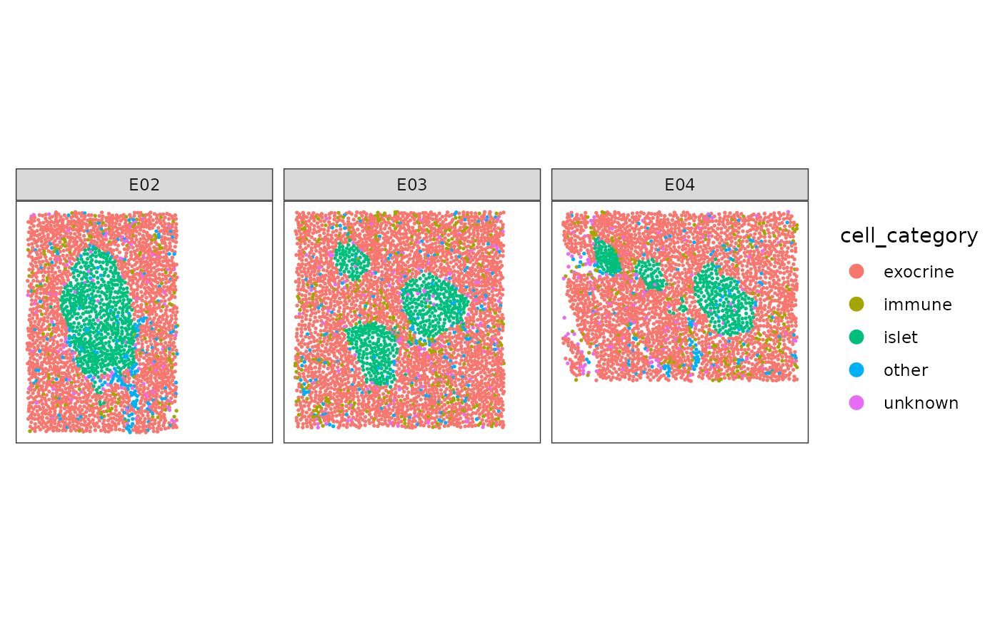
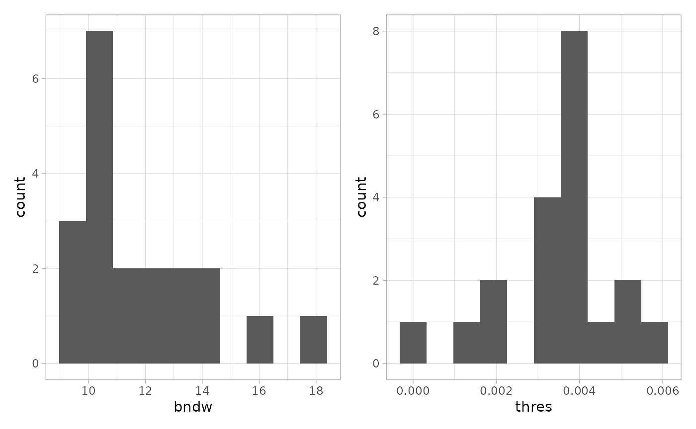
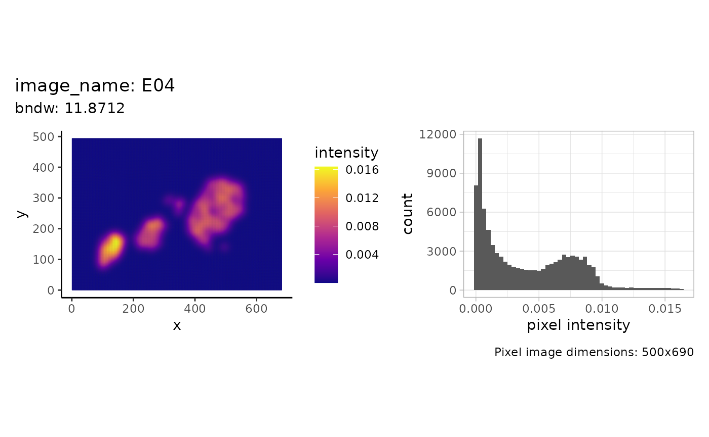
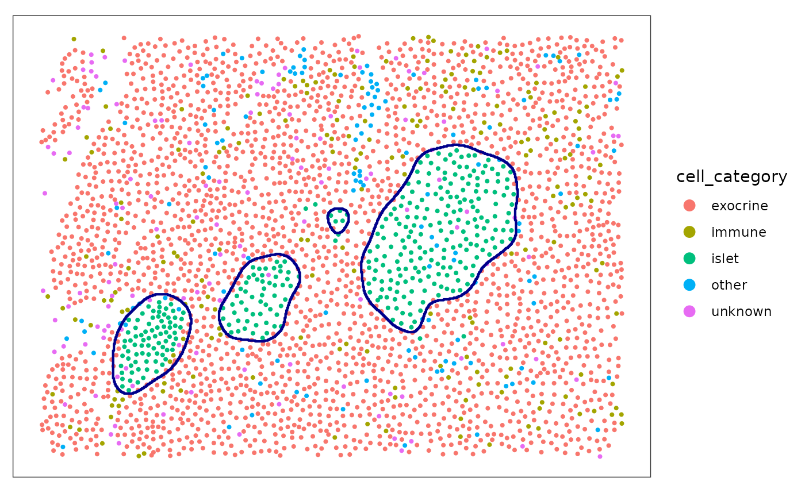
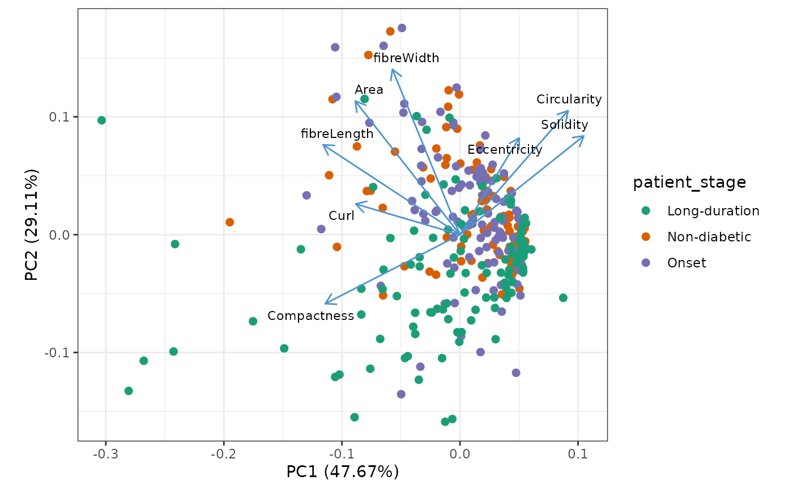
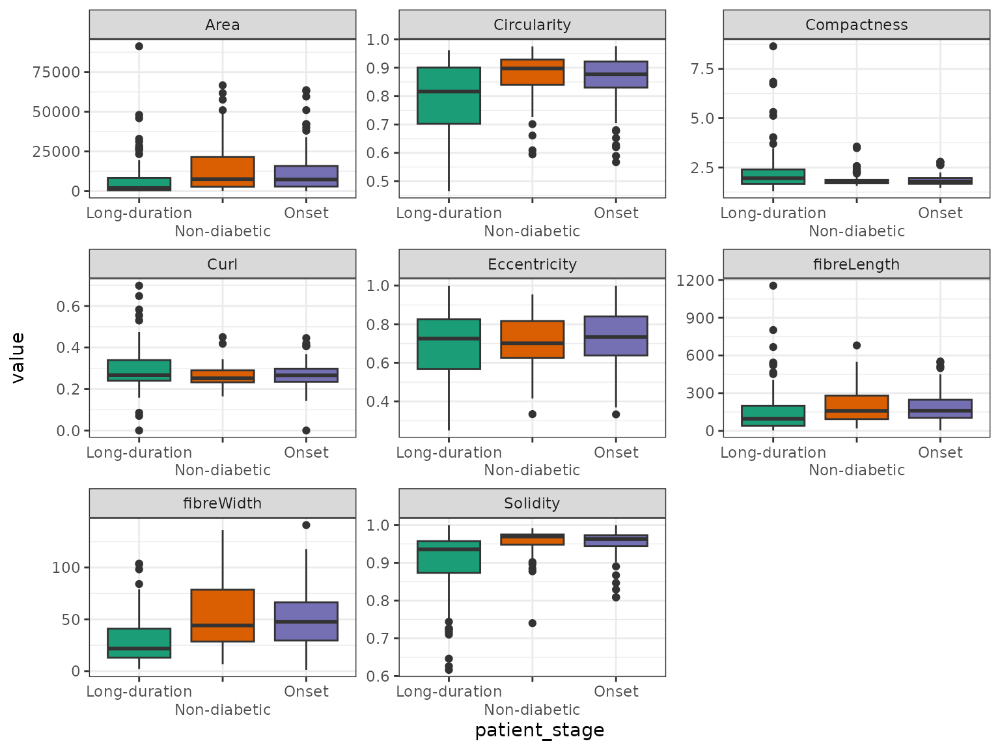

Reconstrucion and analysis of pancreatic islets from IMC data
Samuel Gunz
Department of Molecular Life Sciences, University of Zurich, SwitzerlandSIB Swiss Institute of Bioinformatics, University of Zurich, Switzerlandsamuel.gunz@uzh.ch
Mark D. Robinson
Department of Molecular Life Sciences, University of Zurich, SwitzerlandSIB Swiss Institute of Bioinformatics, University of Zurich, SwitzerlandSource:
vignettes/IMC_DiabetesIslands_Vignette.Rmd
IMC_DiabetesIslands_Vignette.RmdAbstract
Reconstrucion and analysis of pancreatic islets from IMC data
using the sosta package
Introduction
In this vignette we will use data from the package imcdatasets.
The dataset contains imaging mass cytometry (IMC) data of pancreatic
islets of human donors at different stages of type 1 diabetes (T1D)
(Damond et al. (2019)). Note that we will only use a subset of the
images full_dataset = FALSE.
First we plot the data for illustration. As we have multiple images per patient we will subset one patient and a few slides.
plotSpots(
spe[, spe[["patient_id"]] == 6126 &
spe[["image_name"]] %in% c("E02", "E03", "E04")],
annotate = "cell_category",
sample_id = "image_number",
in_tissue = NULL,
y_reverse = FALSE
) + facet_wrap(~image_name) The goal is to reconstruct and quantify the pancreatic islets.
Reconstruction of pancreatic islets
Reconstruction of pancreatic islets for one image
In this example we will reconstruct the density based on the point pattern density of the islet cells. We will start with estimating the parameters that we use for reconstruction afterwards.
The function estimateReconstructionParametersSPE returns
two plots with the estimated parameters for each image. The parameter
bndw is the bandwidth parameter that is used for estimating
the intensity profile of the point pattern. The parameter
thres is the estimated parameter for the density threshold
for reconstruction. We subset 20 images to speed up computation.
n <- estimateReconstructionParametersSPE(
spe,
marks = "cell_category",
image_col = "image_name",
mark_select = "islet",
nimages = 20,
plot_hist = TRUE
)
Using the bdnw parameter we can plot the density image
and a distribution of the density values using the function
shapeIntensityImage.
shapeIntensityImage(
spe,
marks = "cell_category",
image_col = "image_name",
image_id = "E04",
mark_select = "islet",
bndw = bndw_spe
)
The estimated threshold is roughly the mean between the two modes of the pixel density estimation.
We then use the function reconstructShapeDensity to
reconstruct the structure. The result is a sf polygon.
islet <- reconstructShapeDensityImage(
spe,
marks = "cell_category",
image_col = "image_name",
image_id = "E04",
mark_select = "islet",
bndw = bndw_spe,
dim = 500,
thres = thres_spe
)We can plot both the points and the estimated islets polygon.
plotSpots(
spe[, spe[["image_name"]] %in% c("E04")],
annotate = "cell_category",
sample_id = "image_number",
in_tissue = NULL,
y_reverse = FALSE,
point_size = 0.75
) +
geom_sf(
data = islet,
fill = NA,
color = "darkblue",
inherit.aes = FALSE,
linewidth = 0.75
)
#> Coordinate system already present. Adding new coordinate system, which will
#> replace the existing one.
The function reconstructShapeDensityImage can also
estimate the reconstruction parameters internally.
islet_2 <- reconstructShapeDensityImage(
spe,
marks = "cell_category",
image_col = "image_name",
image_id = "E04",
mark_select = "islet",
dim = 500
)
plotSpots(
spe[, spe[["image_name"]] %in% c("E04")],
annotate = "cell_category",
sample_id = "image_number",
in_tissue = NULL,
y_reverse = FALSE,
point_size = 0.75
) +
geom_sf(
data = islet_2,
fill = NA,
color = "darkblue",
inherit.aes = FALSE,
linewidth = 0.75
)
#> Coordinate system already present. Adding new coordinate system, which will
#> replace the existing one.Reconstruction of pancreatic islets for all images
The function reconstructShapeDensitySPE reconstructs the
islets for all images in the spe object.
all_islets <- reconstructShapeDensitySPE(
spe,
marks = "cell_category",
image_col = "image_name",
mark_select = "islet",
bndw = bndw_spe,
thres = thres_spe,
ncores = 2
)Calculation of structure metrics
We use the function totalShapeMetrics to calculate a set
of metrics related to the shape of the islets.
islet_shape_metrics <- totalShapeMetrics(all_islets)The result is a simple feature collection with polygons. We will add some patient level information to the simple feature collection for plotting afterwards.
patient_data <- colData(spe) |>
as_tibble() |>
group_by(image_name) |>
select(all_of(
c(
"patient_stage",
"tissue_slide",
"tissue_region",
"patient_id",
"patient_disease_duration",
"patient_age",
"patient_gender",
"patient_ethnicity",
"patient_BMI",
"sample_id"
)
)) |>
unique()
#> Adding missing grouping variables: `image_name`
all_islets <- dplyr::left_join(all_islets, patient_data, by = "image_name")
all_islets <- cbind(all_islets, t(islet_shape_metrics))Plot structure metrics
We use PCA to get an overview of the different features. Each dot represent one structure.
library(ggfortify)
autoplot(
prcomp(t(islet_shape_metrics), scale. = TRUE),
x = 1,
y = 2,
data = all_islets,
color = "patient_stage",
size = 2,
# shape = 'type',
loadings = TRUE,
loadings.colour = "steelblue3",
loadings.label = TRUE,
loadings.label.size = 3,
loadings.label.repel = TRUE,
loadings.label.colour = "black"
) +
scale_color_brewer(palette = "Dark2") +
theme_bw() +
coord_fixed() A boxplot reveals differences of the shape metrics between patient stages.
all_islets |>
sf::st_drop_geometry() |>
select(patient_stage, rownames(islet_shape_metrics)) |>
pivot_longer(-patient_stage) |>
ggplot(aes(x = patient_stage, y = value, fill = patient_stage)) +
geom_boxplot() +
facet_wrap( ~ name, scales = "free") +
scale_fill_brewer(palette = "Dark2") +
scale_x_discrete(guide = guide_axis(n.dodge = 2)) +
guides(fill = "none") +
theme_bw() # References
- Damond N et al. (2019). A Map of Human Type 1 Diabetes Progression by Imaging Mass Cytometry. Cell Metab 29(3), 755-768.
sessionInfo()
#> R version 4.4.1 (2024-06-14)
#> Platform: x86_64-pc-linux-gnu
#> Running under: Ubuntu 22.04.5 LTS
#>
#> Matrix products: default
#> BLAS: /usr/lib/x86_64-linux-gnu/openblas-pthread/libblas.so.3
#> LAPACK: /usr/lib/x86_64-linux-gnu/openblas-pthread/libopenblasp-r0.3.20.so; LAPACK version 3.10.0
#>
#> locale:
#> [1] LC_CTYPE=C.UTF-8 LC_NUMERIC=C LC_TIME=C.UTF-8
#> [4] LC_COLLATE=C.UTF-8 LC_MONETARY=C.UTF-8 LC_MESSAGES=C.UTF-8
#> [7] LC_PAPER=C.UTF-8 LC_NAME=C LC_ADDRESS=C
#> [10] LC_TELEPHONE=C LC_MEASUREMENT=C.UTF-8 LC_IDENTIFICATION=C
#>
#> time zone: UTC
#> tzcode source: system (glibc)
#>
#> attached base packages:
#> [1] stats4 stats graphics grDevices utils datasets methods
#> [8] base
#>
#> other attached packages:
#> [1] ggfortify_0.4.17 imcdatasets_1.12.0
#> [3] cytomapper_1.16.0 EBImage_4.46.0
#> [5] SpatialExperiment_1.14.0 SingleCellExperiment_1.26.0
#> [7] SummarizedExperiment_1.34.0 Biobase_2.64.0
#> [9] GenomicRanges_1.56.1 GenomeInfoDb_1.40.1
#> [11] IRanges_2.38.1 S4Vectors_0.42.1
#> [13] BiocGenerics_0.50.0 MatrixGenerics_1.16.0
#> [15] matrixStats_1.4.1 spatstat.explore_3.3-2
#> [17] nlme_3.1-164 spatstat.random_3.3-2
#> [19] spatstat.geom_3.3-3 spatstat.univar_3.0-1
#> [21] spatstat.data_3.1-2 ggspavis_1.10.0
#> [23] patchwork_1.3.0 ggplot2_3.5.1
#> [25] tidyr_1.3.1 dplyr_1.1.4
#> [27] sosta_0.0.1 BiocStyle_2.32.1
#>
#> loaded via a namespace (and not attached):
#> [1] RColorBrewer_1.1-3 jsonlite_1.8.8 magrittr_2.0.3
#> [4] spatstat.utils_3.1-0 ggbeeswarm_0.7.2 magick_2.8.4
#> [7] farver_2.1.2 rmarkdown_2.28 fs_1.6.4
#> [10] zlibbioc_1.50.0 ragg_1.3.3 vctrs_0.6.5
#> [13] memoise_2.0.1 RCurl_1.98-1.16 svgPanZoom_0.3.4
#> [16] terra_1.7-78 htmltools_0.5.8.1 S4Arrays_1.4.1
#> [19] curl_5.2.2 AnnotationHub_3.12.0 raster_3.6-26
#> [22] Rhdf5lib_1.26.0 SparseArray_1.4.8 rhdf5_2.48.0
#> [25] sass_0.4.9 KernSmooth_2.23-24 bslib_0.8.0
#> [28] htmlwidgets_1.6.4 desc_1.4.3 cachem_1.1.0
#> [31] mime_0.12 lifecycle_1.0.4 ggside_0.3.1
#> [34] pkgconfig_2.0.3 Matrix_1.7-0 R6_2.5.1
#> [37] fastmap_1.2.0 GenomeInfoDbData_1.2.12 shiny_1.9.1
#> [40] digest_0.6.37 colorspace_2.1-1 AnnotationDbi_1.66.0
#> [43] tensor_1.5 ExperimentHub_2.12.0 RSQLite_2.3.7
#> [46] textshaping_0.4.0 labeling_0.4.3 filelock_1.0.3
#> [49] fansi_1.0.6 spatstat.sparse_3.1-0 nnls_1.5
#> [52] httr_1.4.7 polyclip_1.10-7 abind_1.4-8
#> [55] compiler_4.4.1 proxy_0.4-27 bit64_4.0.5
#> [58] withr_3.0.1 tiff_0.1-12 BiocParallel_1.38.0
#> [61] viridis_0.6.5 DBI_1.2.3 highr_0.11
#> [64] HDF5Array_1.32.1 rappdirs_0.3.3 DelayedArray_0.30.1
#> [67] rjson_0.2.23 classInt_0.4-10 tools_4.4.1
#> [70] units_0.8-5 vipor_0.4.7 beeswarm_0.4.0
#> [73] httpuv_1.6.15 goftest_1.2-3 glue_1.7.0
#> [76] rhdf5filters_1.16.0 promises_1.3.0 grid_4.4.1
#> [79] sf_1.0-17 generics_0.1.3 gtable_0.3.5
#> [82] class_7.3-22 sp_2.1-4 utf8_1.2.4
#> [85] XVector_0.44.0 stringr_1.5.1 BiocVersion_3.19.1
#> [88] ggrepel_0.9.6 pillar_1.9.0 later_1.3.2
#> [91] BiocFileCache_2.12.0 lattice_0.22-6 bit_4.0.5
#> [94] deldir_2.0-4 tidyselect_1.2.1 locfit_1.5-9.10
#> [97] Biostrings_2.72.1 knitr_1.48 gridExtra_2.3
#> [100] bookdown_0.40 svglite_2.1.3 xfun_0.47
#> [103] shinydashboard_0.7.2 stringi_1.8.4 UCSC.utils_1.0.0
#> [106] fftwtools_0.9-11 yaml_2.3.10 evaluate_1.0.0
#> [109] codetools_0.2-20 tibble_3.2.1 BiocManager_1.30.25
#> [112] cli_3.6.3 xtable_1.8-4 systemfonts_1.1.0
#> [115] munsell_0.5.1 jquerylib_0.1.4 Rcpp_1.0.13
#> [118] dbplyr_2.5.0 png_0.1-8 parallel_4.4.1
#> [121] blob_1.2.4 pkgdown_2.1.1 jpeg_0.1-10
#> [124] bitops_1.0-8 viridisLite_0.4.2 scales_1.3.0
#> [127] e1071_1.7-16 purrr_1.0.2 crayon_1.5.3
#> [130] rlang_1.1.4 KEGGREST_1.44.1